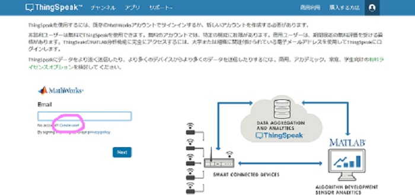
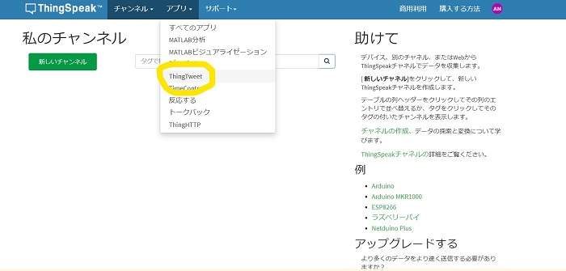
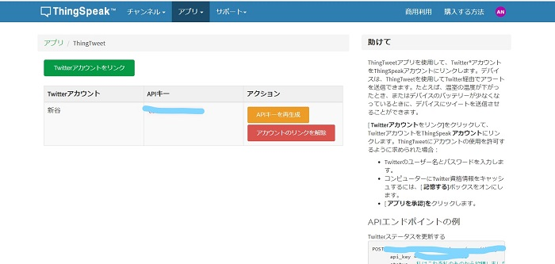
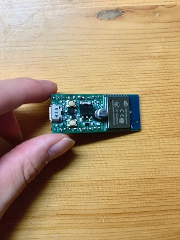
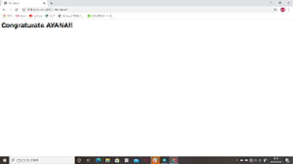

IoT制作への挑戦
~M5StackとTwitterをつなげる~
マイコンをインターネット上のアプリとつなげるサイトがいくつか存在します。私が今回紹介するのはThing SpeakというサイトのThingTweetというサービスです。この、ThingTweetではマイコンからの動作をTwitterに反映？してくれるものです！サインアップして自分のTwitterアカウントのAPI keyを取得すれば簡単にTwitterと繋がれます。
サイトにアクセス
【API key取得手順】
①サイト右上の3本線のバーからsign upを選択
②Create one!を選択しメールアドレスとパスワードを設定その後メールでお知らせが来たような...（笑）

③上のツールバーの所からAppのThingTweetを選択

④API keyを生成を選択し、自分のTwitterアカウントを登録

コードはこちらの方から取得しました！
コード例
ほかにもIFTTTとかでもたくさん試してみたのでまた今度載せまーす！
【m5Stack以外にも試したこと】
この前購入したESP32wroom-02をインターネットにつないでみる！ボタンを押すとHTMLが送れるようにしました。これはその一部。※スペルミスは気にしないで...（笑）


【M5Stackとセンサー】
超音波距離センサーモジュールを使ってセンサーが物体の距離を認知するシステムを体験してみました！今回のIoTはこのTwitter機能と超音波距離センサーモジュールを組み合わせたものを作っていこうかなと思います！